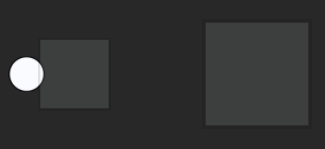

Collision Events
This lesson covers basic collision, collision events, checking for collision with specific objects.
Create a New Project
Level Setup
- Select the LevelSettings object
- In the Properties Window
Ball Object
- Command :
CreateSpriteor - In the Properties Window
- Set Name to:
Ball - Add a RigidBody component
- Add a SphereCollider component
- Under Transform
- Set Translation to:
[-5, 0, 0]
- Set Translation to:
- Under Sprite
- Set SpriteSource to:
Circle
- Set SpriteSource to:
- Under RigidBody
- Set DynamicState to:
Kinematic
- Set DynamicState to:
- Under SphereCollider
- Set Radius to:
0.5
- Set Radius to:
- Set Name to:
Block Object
- Command :
CreateSpriteor - In the Properties Window
- Set Name to:
Block - Add a RigidBody component
- Add a BoxCollider component
- Under Transform
- Set Translation to:
[3, 0, 0] - Set Scale to:
[2, 2, 2]
- Set Translation to:
- Under Sprite
- Set Color to:
[R: 255, G: 255, B: 255, A: 0.10]to make it transparent
- Set Color to:
- Under RigidBody
- Set DynamicState to:
Static
- Set DynamicState to:
- Set Name to:
BigBlock Object
- Press
Ctrl + Dto duplicate the Block object we just created - In the Properties Window
- Set Name to:
BigBlock - Under Transform
- Set Translation to:
[8, 0, 0] - Set Scale to:
[3, 3, 3]
- Set Translation to:
- Set Name to:
- Save the project and run the game
Here what our level should look like:

Simple Movement
Add a new ZilchScript resource named:
MovementIn the Properties Window
Add the Movement script component that we just created to the Ball object:

In the Movement script
- Update the Movement class with the following code:
class Movement : ZilchComponent
{
function Initialize(init : CogInitializer)
{
// Connect to the LogicUpdate event:
Zero.Connect(this.Space, Events.LogicUpdate, this.OnLogicUpdate);
}
function OnLogicUpdate(event : UpdateEvent)
{
// Get current position:
var position = this.Owner.Transform.Translation;
// Move to the right:
position.X += event.Dt * 10.0;
// If past a certain point,
if (position.X >= 12.0)
{
// reset the position.
position.X = -5.0;
}
// Update Translation with changes:
this.Owner.Transform.Translation = position;
}
}
The Ball object should be moving to the right, but then colliding and getting stuck at the first block. In order to make it pass through, we are going to make our blocks have ghost colliders.

Ghost colliders allow us to still know when collisions and add mass to an object without actually colliding.
- Select the Block object
- In the Properties Window
- Under BoxCollider
- Set Ghost to:
True
- Set Ghost to:
- Under BoxCollider
- Select the BigBlock object
- In the Properties Window
- Under BoxCollider
- Set Ghost to:
True
- Set Ghost to:
- Under BoxCollider
- Save the project and run the game
Now it passes through them.
Our next step is to detect when the Ball collides with another object. When this happens, a collision event is dispatched, or sent out.
Collision Events
We discussed how LogicUpdate event is a type of UpdateEvent. CollisionEvent is another type of event. Three events fall under the CollisionEvent category: CollisionStarted, CollisionEnded, and CollisionPersisted.
- CollisionPersisted is when the object was and still is colliding.
- CollisionEnded is when the object was but is no longer colliding.
- CollisionStarted is when the object is colliding but was not colliding previously.
Add a new ZilchScript resource named:
CollisionLogicIn the Properties Window
In the CollisionLogic script
- Update the CollisionLogic class with the following code:
- Update Initialize class with the following code:
- Update the CollisionLogic class with the following code:

function Initialize(init : CogInitializer)
{
// Connect to CollisionStarted event
// when I get a CollisionStarted event call my OnCollisionStarted function
Zero.Connect(this.Owner, Events.CollisionStarted, this.OnCollisionStarted);
}
- Add the OnCollisionStarted function:
function OnCollisionStarted(event : CollisionEvent)
{
// Change model color to Orange.
// Color orange is [R:1, G: 0.5, B:0, A:1.0].
var orange = Real4(1.0, 0.5, 0.0, 1.0);
// Apply color to the Sprite:
this.Owner.Sprite.Color = orange;
}
In this code, we connect to the CollisionStarted event and provide our OnCollisionStarted function as the callback function. Notice that we are connecting to the Owner object and not the Space like we do for LogicUpdate events. This is because the Owner object is dispatching, or sending out, the CollisionEvent. In our OnCollisionStarted function, we change the model color to visually show that we have collided.
The color of the Ball object changes to orange when we collide. Next, we will change the color back to white when we are no longer colliding by using the CollisionEnded event.
- Stop the Game
- In the CollisionLogic script
- Update the Initialize function by appending the following:
Zero.Connect(this.Owner, Events.CollisionStarted, this.OnCollisionStarted);
// Connect to CollisionEnded event
// when I get a CollisionEnded event call my OnCollisionEnded function
Zero.Connect(this.Owner, Events.CollisionEnded, this.OnCollisionEnded);
- Add the following function to the CollisionLogic class:
function OnCollisionEnded(event : CollisionEvent)
{
// Change model color to back to white.
// White is [R:1, G:1, B:1, A:1].
var white = Real4(1.0, 1.0, 1.0, 1.0);
// Apply color to the Sprite:
this.Owner.Sprite.Color = white;
}
The color of the Ball object now changes back to white when we stop colliding. What if we wanted to check for collision with a specific object?
Checking for Collision with Specific Objects
Now we will go over colliding with specific objects by getting information about the object we collided with from the CollisionEvent . Similar to how an UpdateEvent has Dt and CurrentTime as accessible data members, every CollisionEvent provides a way of getting the other object that we either were colliding with, are still colliding with, or just started colliding with.
- Stop the Game
- In the CollisionLogic script
- Update the CollisionLogic ‘s OnCollisionStarted function with the following code:
function OnCollisionStarted(event : CollisionEvent)
{
// Get the object we collided with:
var otherObject = event.OtherObject;
// If we collided with the block,
if (otherObject.Name == "Block")
{
// change model color to Orange.
// Orange is [R:1, G: 0.5, B:0, A:1].
var orange = Real4(1.0, 0.5, 0.0, 1.0);
// Apply color to the Sprite:
this.Owner.Sprite.Color = orange;
}
}
Notice we use the CollisionEvent. OtherObject property of the CollisionEvent in order to get the other object from the CollisionEvent.
The color of the Ball object only changes to orange whenever we collide with the Block object. Now we know how to use specific information about the other colliding object in order to react differently when colliding with different objects.
On Your Own
Disabling Collision Events at Run-Time
Disabling collision events at run-time is pretty simple. Collider components have a boolean value called SendsEvents. If we set SendsEvents to False, the object will not dispatch collision events. Even if we connect to the event, we still can’t get an event that was never sent.
- Stop the Game
- In the CollisionLogic script
- Update the Initialize function by appending the following:
Zero.Connect(this.Owner, Events.CollisionEnded, this.OnCollisionEnded);
// Connect to the LogicUpdate event fired by the space:
// when the space gets a LogicUpdate event call my OnLogicUpdate function
Zero.Connect(this.Space, Events.LogicUpdate, this.OnLogicUpdate);
- Add the OnLogicUpdate function by appending the following code:
function OnLogicUpdate(event: UpdateEvent)
{
// If we are holding down space,
if (Zero.Keyboard.KeyIsDown(Keys.Space))
{
// do NOT send the event.
this.Owner.Collider.SendsEvents = false;
}
else // Otherwise, if we aren't holding down space,
{
// make sure we dispatch collision events.
this.Owner.Collider.SendsEvents = true;
}
}
If you hold down Space, you’ll see that the Ball object no longer changes color because collision events are no longer being sent.